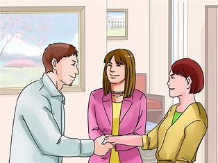
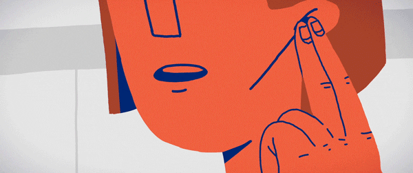
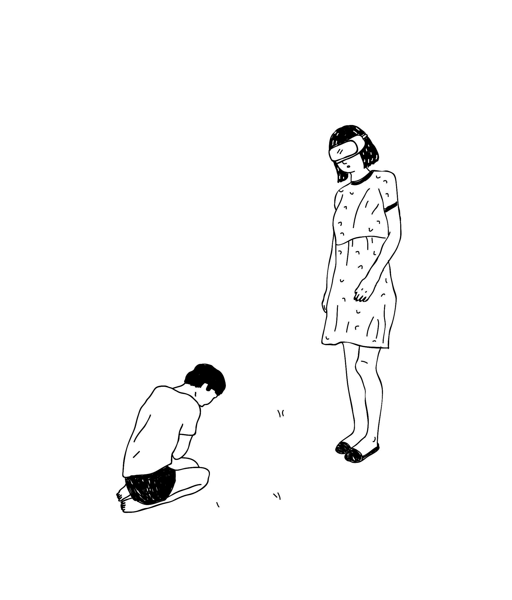
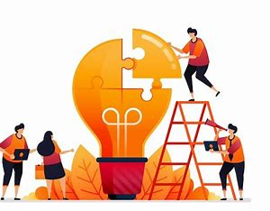
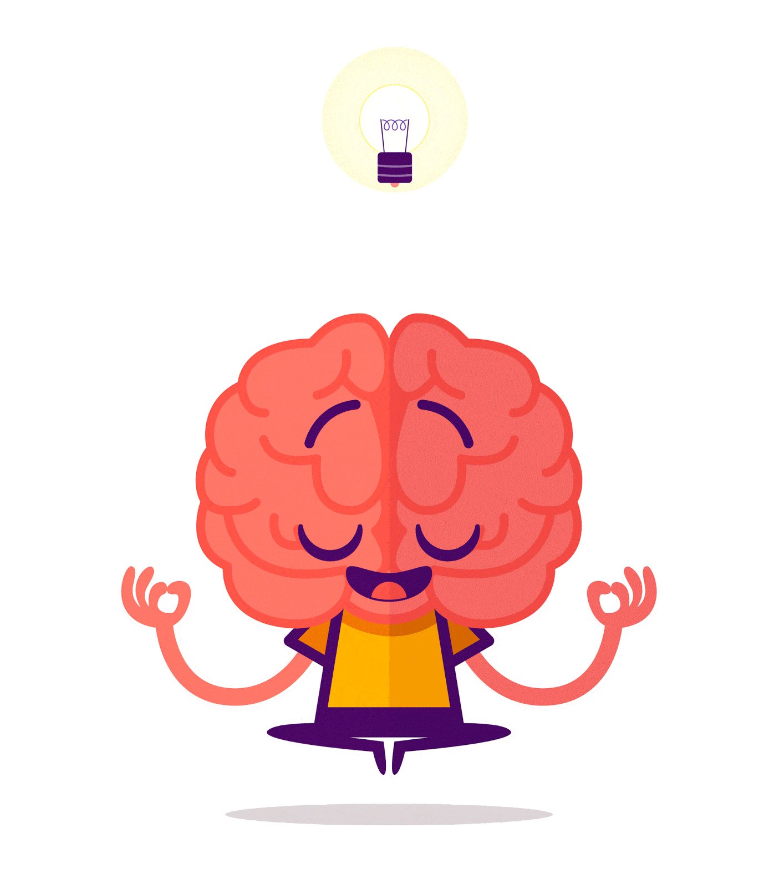
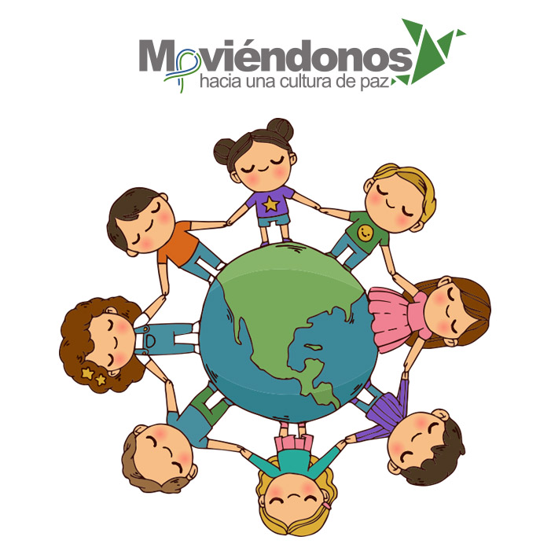

La transformación de conflictos es un proceso esencial para aplicar el principio de "no agredir al otro", ya que busca convertir las tensiones en oportunidades de entendimiento y cooperación. Para lograrlo, es importante seguir una serie de pasos que faciliten la resolución pacífica y constructiva de las diferencias
Reconocer y Entender el Conflicto
| El primer paso es comprender las causas y emociones detrás del conflicto. Identificar necesidades y perspectivas ayuda a no verlo como una confrontación, sino como una oportunidad de diálogo y entendimiento. |
 |
Fomentar la Comunicación Asertiva
| Escuchar activamente y expresarse de manera clara y respetuosa es esencial. La asertividad permite transmitir puntos de vista sin agredir, promoviendo el respeto mutuo. |
 |
Practicar la Empatía
| Ponerse en el lugar del otro permite entender sus emociones y necesidades. La empatía reduce el juicio y la violencia, creando un espacio donde las diferencias se abordan con respeto. |  |
Buscar Soluciones Colaborativas
| El conflicto no es una batalla a ganar, sino una oportunidad para encontrar soluciones que beneficien a todos. A través de la colaboración, las partes involucradas sienten que sus opiniones son escuchadas y valoradas. |  |
Desarrollar Autocontrol Emocional
| El autocontrol es clave para evitar reacciones impulsivas. Gestionar nuestras emociones, especialmente la ira, previene escaladas y promueve un ambiente pacífico. |
 |
Construir una Cultura de Paz y Respeto
| Cuando aplicamos la transformación de conflictos, contribuimos a una cultura donde el principio de “no agredir al otro” se convierte en una práctica cotidiana. Cada diferencia se convierte en una oportunidad para dialogar y fortalecer la convivencia. |
 |